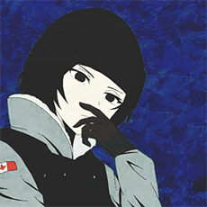

Alo Polisia es un servidor del popular juego Minecraft, su nombre "Alo Polisia" proviene de un error en la sintaxis de la frase "Hola, Policia", en un inicio el servidor fue parte de una comunidad de jugadores anarquica, su creador NexDrak instruido por tutoriales y enseñanzas de otros profesionales experimentados en este mundo, desarrolla poco a poco este servidor y comunidad gamer, cada dia se crean eventos nuevos y sorteos, recientemente se creo un nuevo servidor de minecraft llamado Alo Galaxy y a su vez nuevos retos por cumplir, todo esto gracias a la comunidad y el staff.